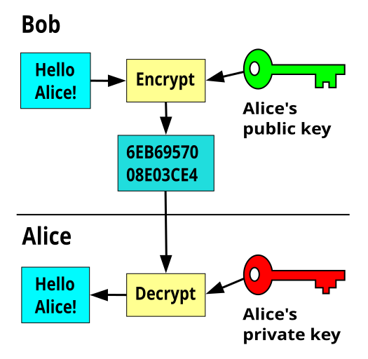
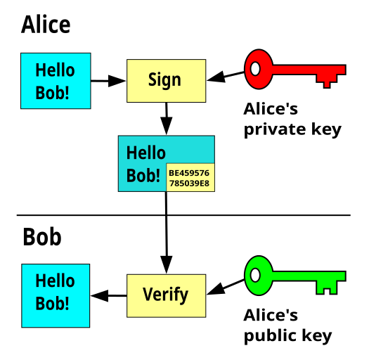
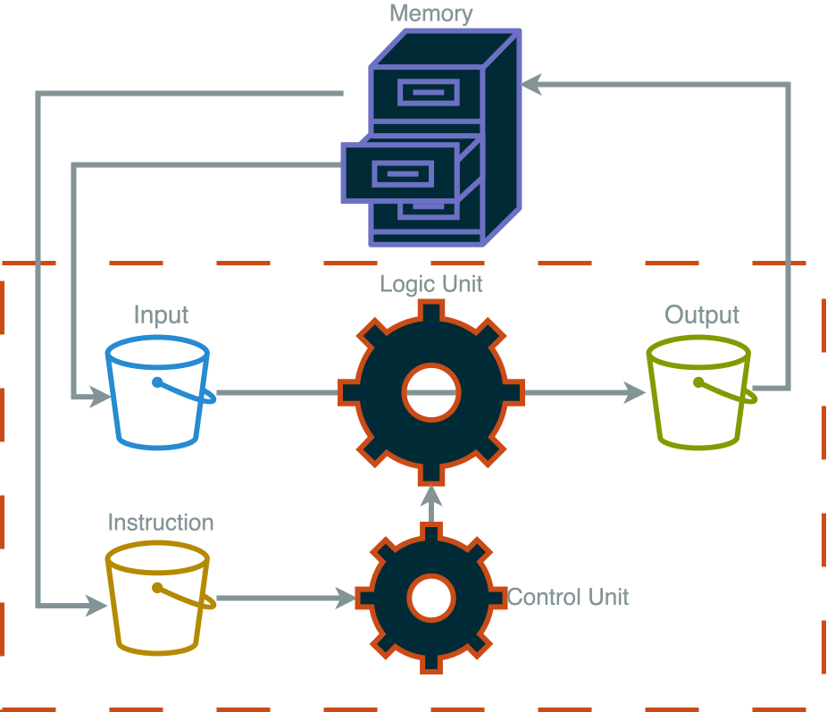
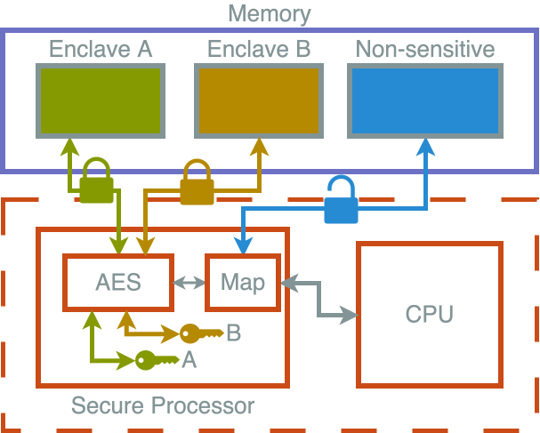

Confidential Computing
For a General audience
This is a complex topic
Try to build from the ground up 🧱
No maths 🧮
It's fine to not cover everything ⏱️
Think about if these explanations and analogies work 🤔
This is a work in progress, we will talk about to how improve it in the breakout 🚧
Summary
Conventional
Working Data is unencrypted
Privileged users can access all working data, as plain text
Trusted Execution Environment (TEE)
Encrypted enclaves are reserved for confidential working data, each with its own encryption key
Nothing outside of the TEE cannot obtain the key
A privileged user would see TEE data as encrypted text
Summary
The Take Home Message
With a Trusted Execution Environment (TEE), you can use a computer in a way that is private, even from the owner of that computer
TEEs protect data in use rather than in storage or being transferred
Summary
An Anology …
Conventional
Imagine an open plan office
Each worker has a desk, but others are visible
A manager is free to look at every desk
TEE
Perhaps an office with locked rooms and key cards
A worker's access is restricted to their room only
A manager cannot enter locked rooms
Cryptography
Securing private data (or communications) against unauthorised readers
Cryptography
Ciphers
A process (algorithm) for encrypting or decrypting
plain text — cipher → encrypted text
plain text ← cipher — encrypted text
Cryptography
A Substitution Cipher
abcdefghijklmnopqrstuvwxyz
xgfvwuniepoqdbcrkmzhaytljs
hello world
iwqqc tcmqv
This is a terrible cipher!
Cryptography
An AES Symmetric Cipher
Advanced Encryption Standard
Requires a secret for encryption and decryption
hello world
65 01 b1 07 5e 2f bf 13 04 c6 fb 2d 9c aa cc be
2,400,000,000,000,000,000,000,000,000,000,000,000,000,000,000,000,000,000 years to break
Cryptography
Lessons
- We can make data unreadable
- Good ciphers are very secure
- Poor ciphers are easy to break
- Secrets must be guarded
Public-key encryption
A type of encryption that uses a pair of keys.
One key is private and must be kept secret by a single person. The other key is public can be used by anyone.
Public-key encryption
Why is this so important?
- Each key can decrypt messages from the other ☯️
- Each key has a unique pair ❄️
By keeping one key secret, we can
- Use the public key to send secrets to the owner 🤫
- Use the public key to verify the signature of the owner ✍️
- A cryptographic way to prove identity 🛂
Public-key encryption
Processes


Public-key encryption
An analogy …
Public-key encryption
Lessons
- Public-key encryption is strong
- Private keys give a sense of identity
- The private key must be kept secret
- Use the public key to send secrets to the owner
- Use the public key to check the owners signature
Trust
Establishing confidence of identity through the signing of public keys
Trust
How trust works
- Key owners can sign others' public keys
- We can use public keys to verify signatures
Therefore, we can indirectly trust identities if they are signed by people we do trust
Trust
Web of trust

Trust
Root of Trust
An approach where a single, authoritative entity signs trusted parties
Browsing the internet securely currently relies on a small set of Certificate Authorities (CAs) who verify websites.
Public keys for these CAs are distributed with operating systems and browsers
Trust
An anaology …
Trust
Lessons
- We can use public-key cryptography to establish trust
- We can indirectly trust identities, through signatures we do trust
- There are different structures of trust: webs, chains, root
- It is difficult to build a large web of trust
States of Data
Data can exist in different states and the way we protect it must change appropriately
States of Data
At Rest 🗄️
Storing data
Physical
Files, records and documents
Locked cabinets or safes
Computational
Data written to persistent storage (like hard disk, USB drive)
Storing files encrypted. Anyone without the key cannot see the plain text
States of Data
In Transit ✉️
Sending messages
Physical
Conversations, letters
Whispering, envelopes
Computational
Any communication over a network, like loading a website, submitting a form
Use a one-time key to encrypt communications. Only the two parties in the conversation can decrypt messages
States of Data
In Use 📖
Data being processed
Physical
Writing
Private rooms
Computational
Data in RAM (memory)
TEEs: use enclaves encrypted with unique keys for distinct jobs
Computers
Computers are just machines ⚙️

The powerful thing is they are dynamic and reactive, a single computer can be programmed to do many things 🪄
They take inputs and perform instructions to create outputs 🏭
Computers
How they work

Computers
Lessons
- Computers can be programmed to process data
- Data and instructions are stored in memory
- Memory is generally not encrypted
- It is possible to read or manipulate arbitrary memory
Trusted Execution Environments
How they work

-
Secure processor
- Memory routed to correct enclave
- Encryption and decryption between CPU and memory
-
Bypassing secure processor
- No access to secrets
- Memory is encrypted text
Trusted Execution Environments
How we use them
- User requests TEE
- CPU creates TEE
- CPU produced evidence
- Report is generated
- You read the report and decide whether to trust
Trusted Execution Environments
How we trust them
- AES encryption is strong
- CPU signs evidence
- Hardware vendor verifies signature and evidence
- Report is signed, and you can verify
Trusted Execution Environments
Lessons
- There are different implementations
- Strong encryption of memory
- Evidence and report are signed and verifiable
- Root of trust in hardware, and hardware vendor